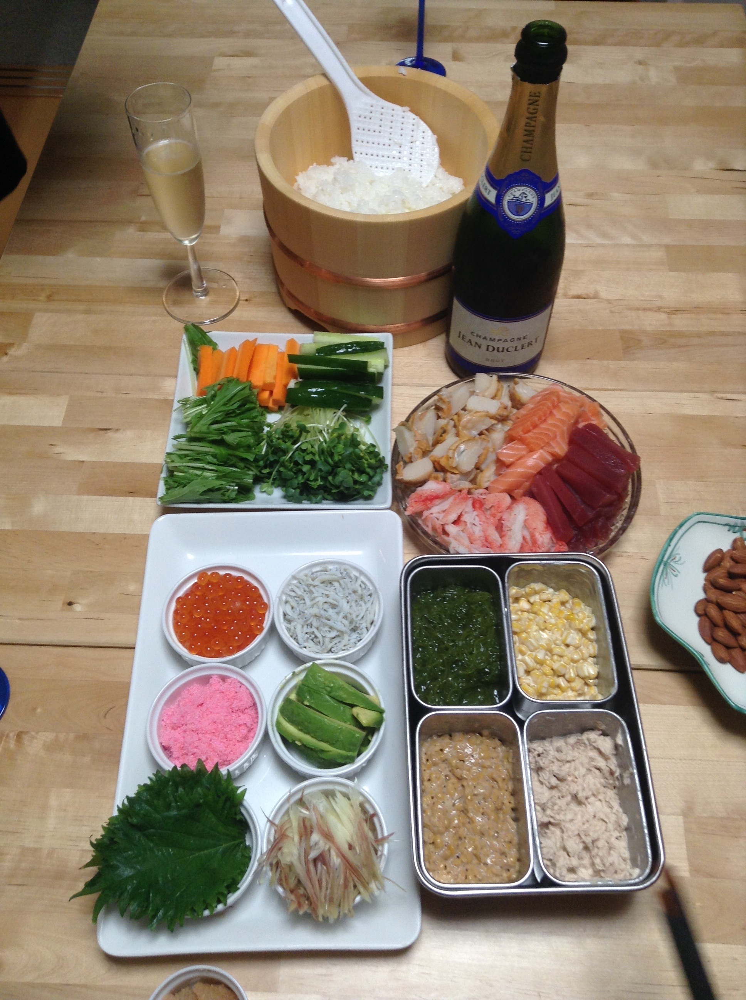

Temakisushi

Temakizushi, also known as hand-rolled sushi or temaki, is a type of sushi that is made by rolling various fillings and sushi rice in a sheet of nori (seaweed) to create a cone or cylindrical shape.
3 Basic Ingredients for Temaki Sushi
- Sushi Rice 酢飯
- Gu (Ingredients for Sushi) 具
- Sashimi Choice (Raw Fish)
- Veggies
- Cooked Ingredients (If you are vegetarian or do not eat raw fish, you can still make Temaki Sushi with vegetables and cooked items)
- Nori (Seaweed)
- Cut a square nori sheet in half (restaurant-style) or quarter (more home-style).
- Place the nori, the shiny side down, on your palm.
- Put 1/4 cup sushi rice at a 45-degree angle to the top left corner of the nori sheet and flatten/spread it evenly.
- Add some ingredients over the rice: cucumber, 1-2 types of sashimi, and radish sprout.
- Roll the bottom left corner up to the middle of the top edge of the nori to form a triangle, and continue rolling until you form a cone shape.
- Put a piece of rice on the tip of the nori to secure the folds.
Whether it’s for a small gathering or a bigger crowd, Temaki Sushi is truly the best type of sushi to serve at home. Enjoy!